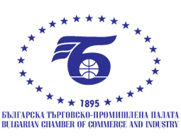
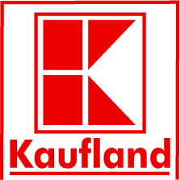
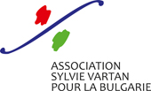
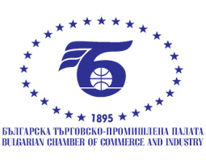
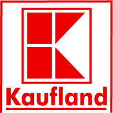
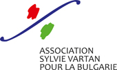
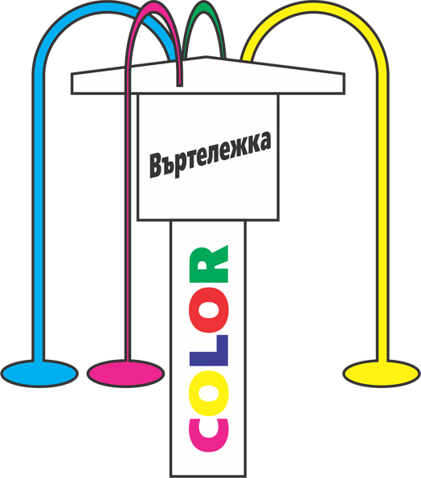
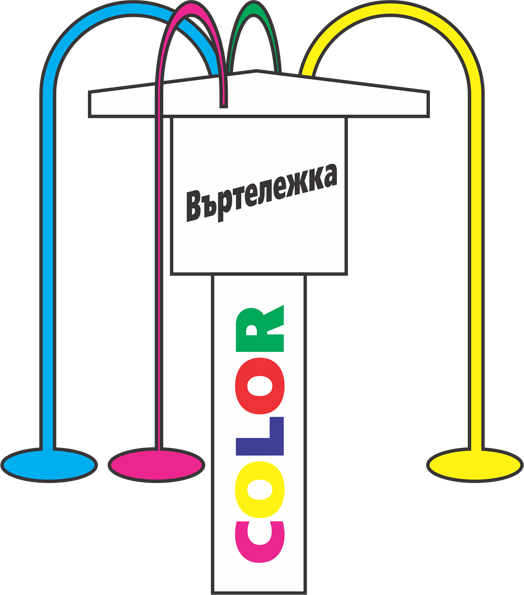

За нас
Мисия
Българският Червен кръст е доброволна организация, която е част от Международното червенокръстко движение и се ръководи от неговите основни принципи: неутралност, хуманност, безпристрастност, независимост, доброволност, единство и универсалност. Чрез своята мрежа от доброволци в цялата страна БЧК подкрепя уязвимите хора в бедствени и кризисни ситуации. Посредством програми за обучение и дейности в полза на обществото допринася за облекчаване и предотвратяване на страданието във всичките му форми, закриля здравето и живота и осигурява уважение към човешката личност.
Партньори
Членове на Партньорската мрежа за благотворителност на БЧК

 






 

История
След Освобождението на България от турско робство съгласно клаузите на Берлинския договор от 1878 г. са създадени Княжество България (васално на турския султан) и автономната област Източна Румелия в рамките на империята. И в Княжеството, и в Източна Румелия още през 1878 г. се учредяват първите червенокръстки дружества. През м. май в София е създадено Софийско областно дружество за подпомагане на болни и ранени с председател софийския митрополит Милетий. В него се включват и работят редица видни граждани на София начело с губернатора на областта В. П. Алабин. На 25 октомври е учредено сливенското дружество на Червения кръст под председателството на митрополит Серафим. Уставът му е утвърден от княз Дондуков-Корсаков - главен губернатор на Източна Румелия. Веднага след Съединението на двете български области на 20-ти септември 1885 г. е създадена и Националната организация с председател митрополит Климент.
Тя е утвърдена с официален указ на първия български княз – Александър Батенберг, който взема БЧК под свое покровителство. Организацията е призната и от Международния комитет на Червения кръст в Женева с писмо от 20-ти октомври 1885 г. От учредяването си Българският Червен кръст има 15 председатели - важни фигури в обществения живот на страната: митрополит Милетий, митрополит Серафим, митрополит Климент (Васил Друмев), д-р Пантелей Минчович, д-р Панайот Жечев, д-р Георги Сарафов, Иван Евстатиев Гешов, проф. д-р Стоян Данев, проф. д-р Васил Моллов, проф. д-р Димитър Ораховац, д-р Любен Рачев, д-р Петър Коларов, д-р Кирил Игнатов, проф. д-р Стоян Саев и маг. фарм. Христо Григоров. Традицията короновани особи да покровителстват Червения кръст е запазена по време на династията на царя. Царица Елеонора – втората съпруга на цар Фердинанд и царица Йоанна – съпруга на цар Борис III играят важна роля в това отношение. Цар Борис III е върховният патрон на Български Червен Кръст през периода 1918 – 1943 г Българският Червен Кръст има значителен принос за формирането и първите стъпки на българската обществена здравна система. Той построява и много болници в София, Плевен, Хасково, Бургас и др. Организацията изгражда и ръководи повече от 40 години болницата “Червен Кръст” – днес едно от най-модерните и авторитетни държавни лечебни заведения. Към болницата през 1900 г. е открито и първото и дълго време единствено в страната училище за милосърдни сестри. По неговия образец и пример по-късно възникват много училища и колежи за медицински сестри. В своята многогодишна история Българският Червен кръст играе важна роля в организирането и оказването на медицинска помощ по време на войните, които България води за национално обединение. Той провежда многобройни здравни курсове за обучението на самарянки и милосърдни сестри, които полагат грижи за болните и ранените войници и офицери на фронта и в тила. Най-големите изпитания за организацията в мирно време са голямото земетресение през 1928 г. и бежанската вълна от Беломорието и Одринска Тракия, с които българските червенокръстци се справят блестящо и успяват да спасят от глад и мизерия хиляди хора, мобилизирайки своите собствени ресурси и помощта на десетки други чуждестранни червенокръстки организации.
БЧК организира обучението и на медицинския персонал за клоновете си, както и медицински сестри в помощ на селското стопанство и промишлените предприятия. Организацията е инициатор и създател на санитарната авиация и спешната помощ в България, както и на организираното безвъзмездно и доброволно кръводаряване.Основна грижа на националната организация винаги е било детското здраве. За българските деца БЧК създава много центрове за здравни консултации, млечни кухни, летовища, ученически трапезарии. Приносът на Българския Червен кръст в борбата с туберкулозата е значителен. През двадесетте и тридесетте години на миналия век местните клонове, с подкрепата на централното ръководство построяват павилиони за туберкулозно болни деца и възрастни в Пловдив, Русе и т.н. любезно предоставяйки ги на общините.
Българският Червен кръст многократно оказва помощ на редица страни. В Русия са изпратени две медицински бригади - по време на Руско-Японската война (1903 – 1905) и Първата световна война. Той организира санитарни влакове и болница на Източния фронт по време на първата фаза на Втората световна война. Войната срещу нацистка Германия още веднъж доказва готовността на националната ни организация да работи при екстремни условия, като бъде вярна на хуманитарните си принципи. В по-ново време БЧК мобилизира обществеността в страната и осъществява многобройни хуманитарни акции в подкрепа на пострадалите от природни бедствия и военни конфликти в над 40 страни по света. Държавата винаги е подкрепяла Българския Червен кръст и многократно е демонстрирала уважение и признание към огромния му принос в хуманитарната област.